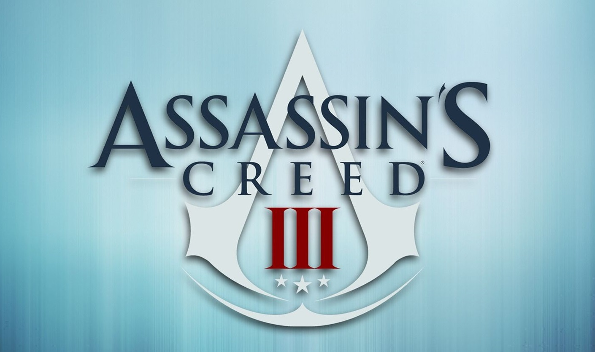

TITOLO: Assassin's Creed III
SVILUPPO: Ubisoft Montreal, Ubisoft Bucharest
DATA DI USCITA: 30 ottobre 2012 (PS3 e Xbox360), 17 marzo 2011(PC)
COLLOCAMENTO STORICO: Guerra di indipendenza americana
AMBIENTAZIONI: New York, Boston, Frontiera, Tenuta di Davenport
TRAMA:
Il gioco riprende esattamente dove era finito Revelations: Desmond si risveglia dal coma nell'Animus dopo aver ricevuto da Giove in persona istruzioni su come prevenire il cataclisma solare previsto per il 21 dicembre 2012 usando un vecchio tempio dei Precursori situato a Turin, nel moderno Stato di New York. Nel gruppo è presente anche William Miles, padre del protagonista con cui ha un rapporto conflittuale e Mentore degli Assassini moderni. Aperta la porta con la Mela dell'Eden e accesi i macchinari interni, Desmond sviene per l'effetto Osmosi e viene reinserito nell'Animus, dove rivive i ricordi di due suoi antenati inglesi, Haytham Kenway, vissuto tra l'Inghilterra e il Nord America nel XVIII secolo e Connor Kenway, figlio di Haytham. Nel 1754 Haytham uccide durante un'esibizione all'Opera di Londra un anziano nobile: un Assassino di nome Miko a cui ruba un medaglione che si rivela un manufatto dei Precursori che funge da chiave per il tempio americano nel quale si trovano i protagonisti nel presente. Pertanto riceve ordine dai superiori di andare nelle colonie nel Nuovo Mondo per aprire il Tempio e carpirne i segreti. Dopo mesi di viaggio e peripezie, Haytham giunge nelle colonie dove trova e riorganizza i suoi confratelli locali: Charles Lee, William Johnson, Thomas Hickey, Benjamin Church e John Pitcairn. Per raggiungere il Tempio, Haytham cerca di farsi amico la tribù Mohawk che da sempre abita la zona in cui sospettano si trovi il tempio e perciò uccide in battaglia il crudele e fanatico Generale Edward Braddock, colpevole di voler sterminare e schiavizzare i nativi in nome del progresso e della civiltà. Nel mentre conosce la nativa Mohawk Kaniehti: io (pronuncia: Kanien-zio) e se ne innamora: porterà in grembo, a sua insaputa, suo figlio.
Ottenuta l'amicizia nativa, Haytham scopre con stupore che il medaglione non apre il tempio, perciò la missione è un fallimento. Si decide comunque a rafforzare l'Ordine nelle colonie: si scoprirà con un grande colpo di scena che Kenway non è un Assassino, bensì un Templare, con grande sorpresa di Desmond e compagni. Uscito dall'Animus, Desmond ha un litigio furibondo col padre William, accusato dal figlio di agire con la stessa disumanità dei Templari e per risposta riceve un pugno dal genitore. Smorzate le tensioni familiari si potrà scegliere se tornare nell'Animus o esplorare il tempio interagendo con l'ologramma di Giunone.
La trama quindi si focalizza sul figlio mezzosangue di Haytham, la cui infanzia idilliaca nella valle abitata dalla tribù di sua madre viene terribilmente interrotta dalla Guerra dei sette anni, durante la quale il villaggio viene distrutto dalle truppe inglesi su ordine di George Washington al fine di evitare alleanze tra nativi e francesi. Il piccolo protagonista assiste impotente alla morte della madre, evento che Connor attribuirà a Charles Lee.
Circa dieci anni dopo, Ratonhnhaké: ton - che esprime più volte la sua insofferenza verso la politica isolazionista della tribù - viene a contatto con un manufatto dei Precursori custodito dalla Grande Madre. Il manufatto scatena in lui una visione in cui Giunone gli ordina di unirsi agli Assassini per combattere i Templari al fine di proteggere il Tempio e di recuperare il medaglione e nasconderlo fino a quando il predestinato (Desmond) non dovrà usarlo per accedere alla parte interna dell'ipogeo e salvare il mondo. Ratonhnhaké: ton abbandona il Clan e attraversa le terre selvagge fino a raggiungere l'ultimo Assassino americano sopravvissuto al massacro templare di qualche anno prima: Achille Davenport. Il vecchio e ottuso mentore si era rifugiato da parecchio tempo nella sua Tenuta, dopo aver perso figlio e moglie in una grave epidemia di brucellosi e la Confraternita degli Assassini, e quindi sentendosi ormai inutile e abbandonato.
Dopo aver ridato speranza all'anziano mentore disincantato, Ratonhnhaké: ton viene accettato come seguace dal vecchio, che gli dà il nome del figlio morto, Connor, al fine di confondersi meglio nella società razzista degli europei. A questo punto Connor dovrà destreggiarsi per tutta la durata della guerra di indipendenza (all'incirca dal 1775 al 1783) tra il tentativo di rifondare la confraternita, il reclutamento di nuovi adepti per liberare le tredici colonie dai Templari, il sostegno ai patrioti americani con lo scopo di fondare una nuova nazione basata sull'uguaglianza e la libertà e la salvaguardia della sua tribù d'origine. Inoltre dovrà guidare spedizioni marittime a bordo del veliero Aquila di proprietà della confraternita per liberare le rotte commerciali e il tratto atlantico coloniale da pirati e inglesi, entrambi manovrati nell'ombra dai Templari comandati dal Gran Maestro Haytham e dal suo pupillo Charles Lee, divenuto per Connor nemico giurato come lo era Rodrigo Borgia per Ezio Auditore.
Alla fine della guerra Connor ottiene la sua vendetta: è costretto ad uccidere il padre nonostante provasse per lui sentimenti contrastanti e infine riesce ad eliminare anche il crudele Lee, ma nonostante ciò capisce che c'è ancora molto da fare. La neonata nazione non ha perso la vecchia mentalità razzista e imperialista inglese ai danni delle minoranze native e afroamericane. Nonostante per anni tra i coloni ribelli fossero diventate popolari le parole di libertà e uguaglianza, la schiavitù rimane una triste realtà sociale.
Al danno si aggiunge la beffa quando Connor scopre che la sua tribù ha dovuto abbandonare il territorio vicino al tempio a causa del neonato governo americano, che ha comprato il terreno dei nativi (per pagare i debiti di guerra) costringendoli a spostarsi. Alla fine si ottiene il ricordo voluto, ovvero l'ubicazione del medaglione: Ratonhnhaké: ton lo ha nascosto nella tomba di Connor Davenport, sepolto vicino al padre Achille, morto di vecchiaia qualche anno prima.
All'esterno dell'Animus, Desmond dovrà andare in posti quali Manhattan e Brasile usando le abilità apprese con l'osmosi da Connor, Ezio e Altair con l'obiettivo di recuperare dispositivi energetici degli antichi per riattivare le macchine che dovranno salvare il mondo. Durante queste missioni Miles si scontrerà con Daniel Cross, la spia Templare che nel 2000 aveva ucciso il vecchio Mentore e portato gli Assassini sull'orlo della distruzione totale. Il finale di queste missioni avviene nella stessa struttura dell'Abstergo a sud di Roma dove il protagonista era tenuto prigioniero nel primo Assassin's Creed. Desmond è costretto a tornarvi per salvare il padre William catturato dai Templari durante il recupero di un manufatto in Egitto. Una volta all'interno Desmond assassina Cross e usa i poteri della Mela per liberare il padre e uccidere Warren Vidic, responsabile del progetto Animus e antagonista del ragazzo nel primo capitolo della saga.
Ora che padre e figlio sono riappacificati e di nuovo in possesso del medaglione e dopo aver aperto la tomba di Achille Davenport, il gruppo apre la parte bloccata del tempio. Qui trovano un piedistallo che, stando alle parole di Giunone (la quale è sempre stata presente nel corso del gioco sotto forma di spirito/ologramma senziente), deve essere attivato dal giovane Miles per salvare il pianeta dall'imminente eruzione solare destinata a spazzare via l'umanità. A sorpresa appare Minerva, che avverte gli Assassini di non farlo: Giunone in realtà è malvagia e desidera solo conquistare il mondo e schiavizzare gli umani che odia poiché li considera la causa della fine del suo popolo e di tutti coloro che lei amava. Minerva e Giove avevano tentato di ucciderla e avevano intrappolato il suo corpo nella zona inaccessibile del tempio perché non attuasse il suo folle piano. Giunone sopravvisse e utilizzò la tecnologia trascendentale per trasferire la sua coscienza nel grande tempio, guidando gli eventi attraverso i secoli in attesa di essere liberata. Minerva spiega a Desmond e compagni che devono lasciare le cose come stanno e permettere alla tempesta solare di spazzare via la maggior parte dell'umanità. Desmond guiderà i sopravvissuti diventando una nuova guida spirituale per la rinata umanità e le sue parole sopravviveranno molto tempo alla sua morte naturale. Come sempre accade nei cicli millenari della civiltà umana, le sue parole e la religione nata da esse verranno distorte nei secoli e utilizzate per schiavizzare le masse come già successo nelle ere precedenti. Desmond sarebbe necessario ad attivare la macchina poiché solo lui ha la concentrazione di DNA dei Precursori necessaria per accenderla, ma ciò lo ucciderebbe.
Desmond si trova quindi di fronte alla prospettiva di lasciar morire l'umanità attuale solo per tener prigioniera Giunone. Si rifiuta sostenendo che c'è sempre una speranza, e non è detto che la confraternita non possa trovare in futuro un modo per combattere Giunone. Decide perciò di sacrificarsi dicendo addio al padre con cui si era da poco ritrovato e agli altri due confratelli ordinando loro di lasciare il tempio. I tre obbediscono riluttanti e Desmond attiva il macchinario, che genera una sorta di campo difensivo attorno al globo simile a un'aurora boreale che tutela la vita e la civiltà dalle radiazioni solari, ma l'energia è tale da condurre Desmond alla morte. Due agenti Abstergo prelevano il cadavere di Desmond all'incirca quindici ore dopo la sua morte.
Durante i titoli di coda Giunone, ormai libera, torreggia sul cadavere di Desmond dicendogli che ha interpretato bene la sua parte, ma ormai è tempo che lei interpreti la sua e se ne va.
Dopo i titoli di coda assistiamo all'epilogo delle vicende di Connor, che dopo aver ereditato la villa e la proprietà di Achille si reca nel sotterraneo dove sono conservate le armi e le abiti dell'Ordine, staccando i quadri di tutti di Templari per poi bruciarli. Quindi si reca all'aperto e stacca dall'entrata il Tomahawk che aveva piantato lì quando dichiarò guerra aperta ai Templari, a simboleggiare la fine della sua missione. Dopo aver saputo la sopracitata partenza del proprio popolo, Connor si reca a New York, dove è testimone della cacciata dagli inglesi dal suolo americano: l'effettiva nascita degli Stati Uniti d'America.
ARMI:
Lama celata: L'arma distintiva dell'Ordine degli Assassini. La lama celata è una polsiera in cui è nascosto un meccanismo a molla, attivato con un rapido scatto del polso; ideale per le uccisioni silenziose. Connor come Ezio ne dispone due e in questo capitolo è possibile estrarne una, tramite un perno dalla polsiera, e usarla come pugnale.
Doppia pistola: Potente e letale, la più efficace dalla media distanza anche se rumorosa e lenta da ricaricare. All'inizio Connor ne ha solo una.
Arco: Silenzioso e letale dalla lunga distanza. Connor potrà portare con sé un massimo di 16 frecce, l'arco sarà utilizzabile a partire dal secondo ricordo di Connor.
Tomahawk: Ascia utilizzata come arma dai Nativi americani, efficace nel combattimento ravvicinato. In un ricordo del capitano kidd, durante una scena video il tomahawk viene impiegato per scivolare dalla funi tese come in Assassin's Creed: Revelations con la lama uncinata. Dapprima disporrà di un tomahawk rudimentale in pietra, quando poi entrerà nella confraternita, ne avrà un altro con la forma del simbolo degli Assassini. Tuttavia il giocatore potrà, servendosi delle risorse della Tenuta, fabbricare un Tomahawk da guerra ancora più potente di quello con il simbolo degli Assassini.
Dardo da corda: Una nuova arma molto particolare quanto utile e dall'uso variegato, difatto è una sorta di fune attaccata alla polsiera di Connor. Si può lanciare il dardo contro il nemico da un albero (o altra superficie sopraelevata) e usare il proprio peso per scendere rapidamente verso terra, causando un effetto "contrappeso" impiccando (e difatto strozzando) chi viene colpito. Può anche essere usato come arma "rompi-difesa" nei combattimenti a terra, poiché se scagliato contro un nemico sarà possibile tirarlo verso di se, disarmandolo, per poi finirlo con un normale affondo all'arma bianca quando questi è ancora a terra indifeso (tutto ciò senza premere la levetta analogica, che altrimenti lo strozzerebbe e causerebbe il consumo di una munizione). Questa tecnica per disarmare è estremamente utile contro nemici bravi sia a respingere e contrattaccare sia a parare i normali attacchi di Connor, come ad esempio, i temibili Jaeger. Il dardo da corda è un'arma consumabile, ovvero dotata di munizioni limitate. Se lo si usa per uccidere, le munizioni inizialmente disponibili saranno 5 (aumentabili fabbricando delle borse più capienti sfruttando le risorse della Tenuta). Se usato in via non letale invece, per disarmare il nemico e gettarlo a terra, le munizioni non verranno intaccate.
Bombe fumogene: Già presenti nei precedenti capitoli, è un tipo di arma non letale ma utilissima per uscire da situazioni intricate o guadagnare un decisivo vantaggio durante uno scontro, specialmente se in inferiorità numerica. Sono piccole bombe contenenti una polvere che genera una nube di fumo che impedisce la visuale a coloro che sono nel raggio dell'area colpita (in genere non molto grande). Mentre i nemici (o il nemico) rimarranno disorientati dal fumo, non vedendo più nulla, Connor non subirà alcun effetto grazie all'Occhio dell'Aquila e potrà eliminare con semplicità (spesso con un solo affondo) i nemici presenti, che non potendo vedere non potranno contrastare in nessun modo la sua azione. Anch'esse rientrano nella tipologia delle armi consumabili, difatti inizialmente se ne potranno avere a disposizione solo tre (ma si potrà fabbricare una borsa più capiente sfruttando le risorse della Tenuta).
Dardi avvelenati: Sono dei piccoli pugnali da lancio intrisi di veleno, capaci di uccidere in un sol colpo il nemico dopo che questi si accascia a terra rantolando e morendo dopo alcuni spasmi. Sono ottimi per le eliminazioni furtive, ma non hanno una lunga gittata essendo lanciati con la mano. Come tutte le armi consumabili, anche i dardi avvelenati sono limitati in numero e inizialmente se ne avranno a disposizione solo tre. Sfruttando le risorse della Tenuta tuttavia, sarà possibile fabbricare una sacca più capiente dove poterne contenere di più.
Anello del capitano Kidd: È il famigerato tesoro del capitano Kidd, nascosto nei meandri di una grotta marina sull'isola di Oak. È un frutto dell'Eden (più precisamente un Frammento), ovvero un'arma speciale fabbricata dai Precursori (e quindi vecchia di migliaia di anni) ed ereditata dal pirata Kidd. Indossando l'anello, si riceve la possibilità di deviare i colpi da arma da fuoco, in quanto prima di venire investiti una sorta di schermo protettivo ci protegge dai proiettili. Lo schermo risulta estremamente efficace nelle medie distanze e soprattutto contro le normali pistole, viceversa il suo potere vacilla di più nelle brevi distanze e contro i moschetti. L'anello, essendo un oggetto particolare, potrà essere ottenuto solo ritrovando tutti i frammenti della mappa del tesoro di Kidd e recandosi sull'isola di Oak per prenderlo. Non sarà quindi disponibile nelle armerie (a differenza per esempio di un'altra arma del capitano Kidd, la spada, recuperata nelle rovine maya di Cerros e da lì in poi disponibile in ogni general store).
Oltre a queste armi, Connor può utilizzare spade, asce e mazze nel corpo a corpo e moschetti e pistole per la lunga distanza. Fanno il loro ritorno, come detto, anche le bombe fumogene acquistabili nelle armerie come da tradizione, oltre che a mine, esche per animali e trappole. Inoltre è possibile utilizzare il moschetto a pietra focaia delle guardie e differentemente dai capitoli precedenti, è possibile correre con le armi raccolte senza lasciarle cadere a terra.
ARMI NAVALI:
Palle di cannone: Sono le sfere di piombo di dimensioni grandi, causano un danno maggiore ma a sua volta necessitano di tempi di ricarica superiori alle altre.
Palle incatenate: Piccole sfere di piombo legate a gruppetti tramite delle catene, servono solo per abbattere l'albero maestro (o gli alberi maestri) delle navi nemiche, impedendogli quindi futuri movimenti. In genere una volta abbattuti gli alberi principali, l'Aquila si avvicinerà all'imbarcazione nemica per iniziare l'arrembaggio.
Proiettili a grappoli: Munizioni formate da varie palline o proiettili sparati a mitraglia, sono molto efficaci contro gruppi di piccole imbarcazioni poiché hanno un raggio d'azione abbastanza ampio. Causano inoltre dei rallentamenti nelle operazioni di ricarica dei cannoni nemici. Meno efficaci contro imbarcazioni più solide e grandi.
Palle incendiarie: Ottima alternativa alle più grandi palle di cannone, poiché seppur più piccole (e in teoria meno dannose) essendo incendiate continuano a infliggere danni anche dopo essere state scagliate, bruciando alcune sezioni della nave colpita, scoprendone alcuni buchi che diventeranno i suoi punti deboli (come quelle aree in cui sono stipati barili o munizioni esplosive, potendo far saltare la nave se colpiti di precisione coi cannoni girevoli).
Cannoni rotanti: Anche detti cannoni girevoli, sono i cannoni più piccoli (e meno numerosi) presenti sulla nave, rientrando nella tipologia delle armi secondarie. Posizionati solo in superficie nel ponte di coperta, sono utili per colpi di precisione e al massimo per danneggiare piccole imbarcazioni (quali piccole scialuppe). A differenza dei cannoni più grandi, sono posizionati anche a prua e poppa, potendo colpire sia in avanti che dietro e non solo di lato. Ogni cannone rotante è mosso da un solo uomo, differentemente dai cannoni maggiori che prevedono almeno due uomini a cannone per gestirli. I cannoni rotanti hanno una minor gittata rispetto alle armi primarie, ma si ricaricano più velocemente. Risultano letali quando l'Aquila riesce a scoprire un punto debole della nave nemica (il c.d. affondo alla "Santa Barbara").
Rostro: Sporgenza appuntita e massiccia in metallo, posizionata nel muso della nave nella zona di congiunzione tra la parte finale prodiera della chiglia e il dritto di prua (quindi sotto il livello del mare). Serve per speronare le imbarcazioni, indipendentemente dalla loto stazza. Essendo un'arma a impatto è più efficace su imbarcazioni più piccole e leggere dell'Aquila, ma può assestare ottimi colpi anche a navi più grandi se prese sul lato. Il rostro non è presente inizialmente, ma potrà essere acquistato come potenziamento della nave. È difatto una terza tipologia di arma navale, non rientrando in quelle primarie e secondarie
DLC: "La Tirannia di Re Washington", "Segreti Nascosti", "Benedict Arnold", "Temprato dalla Guerra".